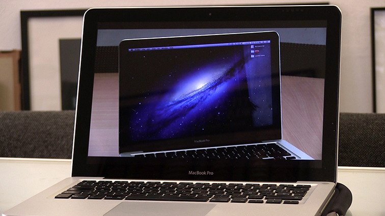

ELISA BALMACEDA
ELISA BALMACEDA
Paranal (VLT)
VIDEO FULL HD CON SONIDO STÉREO. DURACIÓN 6:50 MIN.

Paranal (VLT) registra el observatorio astronómico Very Large Telescope, situado en el monte Paranal del desierto de Atacama. El video documenta las instalaciones y maquinarias automatizadas de uno de los mayores telescopios ópticos del mundo. Imágenes documentales son combinadas con animaciones 3D que ilustran el funcionamiento de la instrumentación óptica del telescopio. El video registra también la residencia subterránea del centro astronómico, un ambiente artificial que presenta un microclima verde y húmedo, el cual busca generar un contrapunto a la extrema aridez del desierto.
Andromeda M31
VIDEO FULL HD CON SONIDO ESTÉREO. DURACIÓN 10:13 MIN.

Andrómeda M31 presenta el análisis científico del astrofísico Dr. Volker Ossenkopf, sobre una imagen utilizada como fondo de pantalla de un ordenador portátil: una fotografía astronómica de la galaxia de Andrómeda M31.
Este tipo de imágenes son registradas por telescopios que capturan ondas electromagnéticas fuera del espectro visible de la luz, para luego ser convertidas en información visual inteligible. El video busca dilucidar hasta qué punto estas imágenes, que son vistas diariamente por miles de usuarios, representan la realidad.

Elisa Balmaceda (Santiago de Chile, 1985) vive y trabaja en Berlín. Estudió Bellas Artes en la Universidad Católica de Chile (2007) y posteriormente obtuvo un Magíster en Artes Mediales en la Academy of Media Arts Cologne, Alemania (2015). Su práctica incorpora fotografía, film, video, instalación y arte lumínico; medios por los cuales la artista explora el vínculo entre arte, paisaje, tecnología y pensamiento mágico.
www.elisabalmaceda.com